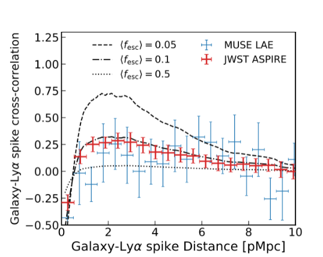
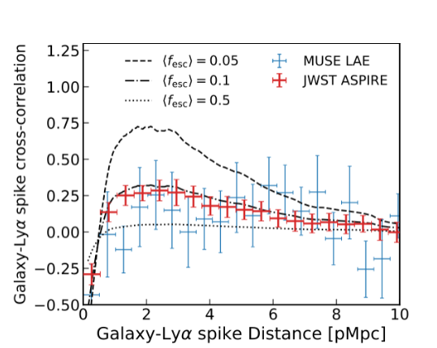

ASPIRE JWST (GO 2078)
ASPIRE is a 30-hour NIRCam WFSS and imaging program targeting 240 sq. arcmin around the fields of 25 z>6.5 quasars.
With imaging in F115W, F200W, and F356W plus slitless spectroscopy in F356W, we can blindly detect hundreds of galaxies via Hβ+[O III] at z=5.3-7. Our coordinated parallel imaging with NIRISS F356W and F444W also enables the blind detection of many z~6 galaxies. Our main goals are to uncover key properties of the quasars and their host galaxies, as well as the galaxies residing in their larger-scale environment.
Since our program probes the largest cosmic volume out of any of the JWST Cycle 1 programs, we have the unique opportunity to explore many other science goals at both lower and higher redshifts. Below we highlight some key physical questions our team is working on answering.
Constraining quasar-galaxy cross-correlation

The clustering of a population can be directly related to their host dark matter halo masses, but the low space density of z>6 quasars prevents the auto-correlation measurement. While we have operated under the assumption that the most luminous z>6 quasars reside in the most massive DM halos, we have not constrained this observationally. With a large sample of galaxies, ASPIRE will place constraints on the cross-correlation length of quasars and galaxies at z>6.
The Quest to Detect Stellar Emission from Quasar Host Galaxies
Because the light from a luminous quasar can outshine its host galaxy, disentangling the starlight from z>6 quasars has been nearly impossible before the spatial resolution and sensitivity afforded by JWST. Detections in the rest-UV and optical in F200W and F356W offer stringent constraints on the emission from the quasar host with much deeper observations than achieved previously by HST. Combined with existing observations of the gas and dust revealed by ALMA, we will have a detailed multiwavelength understanding of the host galaxy's ISM and stellar distribution.
Cross-Correlation Between Galaxies & The Intergalactic Medium
 

Bottom: Galaxy-Lyα spike cross-correlation function models compared with current measurements with MUSE observations and the predicted measurement we will make with ASPIRE.
Faint galaxies might dominate the process of reionization if their escape fractions of ionizing photons is large, but LyC cannot be directly detected at z>5 as it is increasingly absorbed by the intergalactic medium. However, we can probe this indirectly by cross-correlating foreground galaxies with Lyα and Lyβ transmission spikes in quasar spectra. Excess IGM transmission is expected around bright galaxies, which traces the enhanced ionizing background produced by a faint clustered population, allowing us to constrain the ionizing output of galaxies.